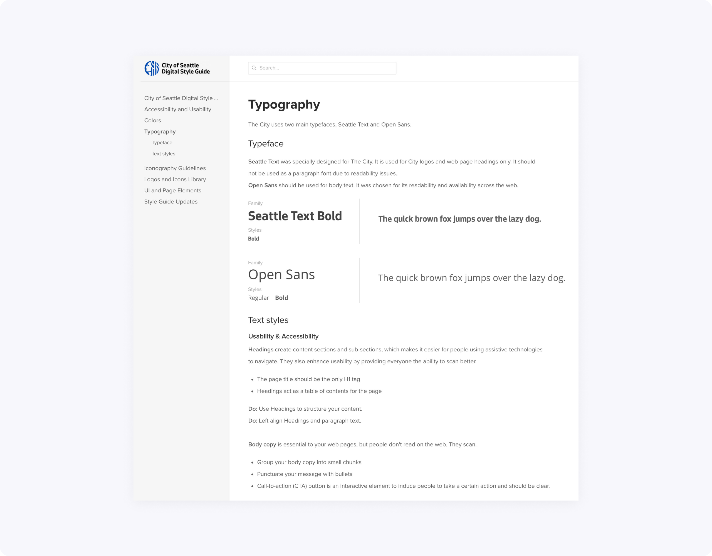

At the beginning of my senior year at the University of Washington, I was giving a chance to intern for the Digital Engagement team at the City of Seattle as a UX Design Intern. My main project was to create an initial version of the Digital Style Guide for seattle.gov website.
Contribution
I took charge of the project, facilitating brainstorming sessions, conducting user research, and creating asset libraries from scratch.
Problem
The Seattle.gov website is a digital representation of the City of Seattle. It consists of over 40 departmental websites, providing services to Seattle citizens.
Every department has a content manager who maintains their website. In result, UI elements, like buttons, forms, etc., looked inconsistently across the whole seattle.gov website.
Approach
- Identifying potential stakeholders and users, and interviewing them to define specific use cases of the future style guide.
- Conducting a complete inventory of all website elements, including colors, typography, iconography, interaction components, and layout patterns.
- Determining the structure of the design system, defining usability and accessibility principles, prototyping UI elements, writing the copy.
During a kick-off brainstorming session, which included design and engineering teams, we identified the main stakeholder categories as:
- Vendors–companies who are integrating services into the website.
- Content managers–people maintaining departmental websites and their content.
- Digital Services and IT–people maintaining the website's CMS and developers.
- Design team–as a source of truth.
Process
I started the inventory by investigating all website pages, identifying variations of colors, fonts, icons, main interaction elements (buttons, input fields, forms, etc.), collecting screenshots and storing them in a single location.
I was also identifying main page types and layout patterns including their responsive behavior and mobile treatment. Therefore, I was able to determine four different types of layouts and five page categories: Home, About, Services, Blog, and Contact Us.
When the inventory was done, I worked on the stylegude's structure, determining its main sections. I went through a couple of iterations, trying to make it comprehensive and easy to use for each category of the stakeholders.
Building the style guide was a team effort. I've been presenting my progress to our designers, engineers, department managers and other stakeholders, involved in the website's development process. I used the feedback to iterate on the project.
At first, we planned to base our future style guide on the website's native CMS platform but eventually decided to use the UXPen design system tool since it was already used for the development process.
While I was drawing design elements and building interaction prototypes, my manager was helping me with editing the supporting documentation. Every section of the style guide we supported with Usability and Accessibility context.
We also followed recommendations from the United States Web Design System because as a government organization we had to comply with these standards.
Results
We divided the style guide into the following categories: Accessibility and Usability, Colors, Typography, Iconography, Logos, and UI/Page Elements.
We defined the main color scheme, including text, background, and notification colors. We also provided examples and best practices of how the scheme should be implemented.
To maintain cohesive experience across all the websites, we decided to minimize font choices to Seattle Text (titles and headlines) and Open Sans (body text.)
We also went with Font Awesome for our icon library choice, because historically the majority of departments already used it.
We structured the UI and Page Elements category as follows: Buttons, Forms, Lists, Tables, Notifications, Navigations, Headers, and Footers.
Takeaways
This was a great experience for me as a design student. I had the opportunity to work on a real project with a team of designers, collaborate with engineers, interact with different categories of stakeholders, and see real results at the end.
Check out the live version of the City of Seattle Digital Style Guide, and thanks for reading!